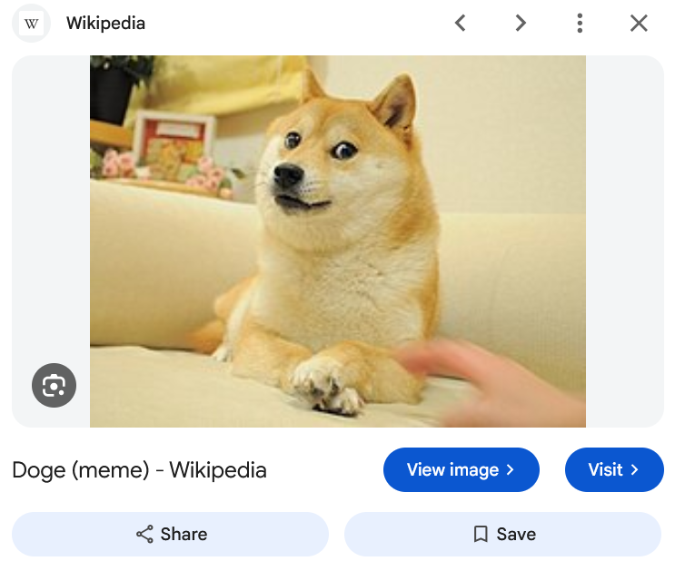

Go to the image
Open the full-size image URL when Google exposes it. A missing original is handled safely instead of linking to a Google thumbnail.
A maintained browser extension
Bring the View image button back to Google Images. Open the original image directly, without the extra detour.
Firefox: Mozilla-signed XPI · Chromium: load unpacked
Free & open source · Desktop browsers · v5.3.4

A familiar feature, kept working
The original ViewImage extension restored a useful shortcut: opening an image directly from Google’s preview. As Google changed its result panels, the old implementation stopped finding the right controls.
This independent continuation, maintained by Kevin Elias, updates the detection for today’s panel variants, including udm=imgs. It identifies the selected image and its matching destination action, then keeps the button in sync as you browse results.
It continues Joshua Butt’s original project. It is not an official Google product or an upstream release. Version 5.3.4 restores direct image viewing; Google’s own Lens tools remain separate.
Small extension. Useful details.
Open the full-size image URL when Google exposes it. A missing original is handled safely instead of linking to a Google thumbnail.
The button follows the selected result and supports detached preview panels. No duplicate buttons as the page updates.
Choose a new tab, hide the referrer, or set custom button text. Otherwise, the label follows your browser’s language.
Get started in a minute
Choose your browser, install the extension, reload Google Images, and open a result.
Latest release / 5.3.4
Current URL modes, detached panels, localized text, and a Mozilla-signed Firefox package.